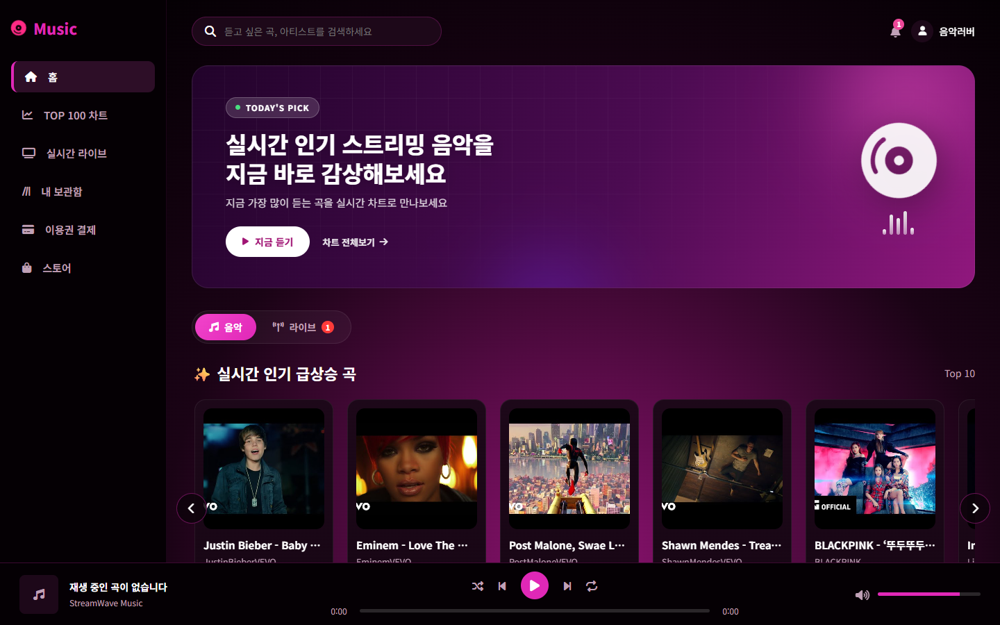
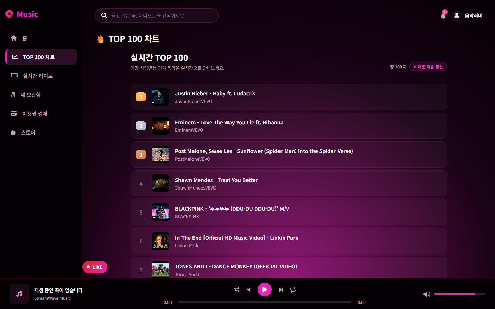
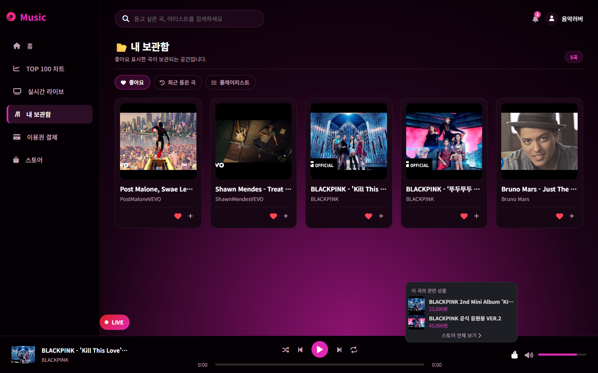
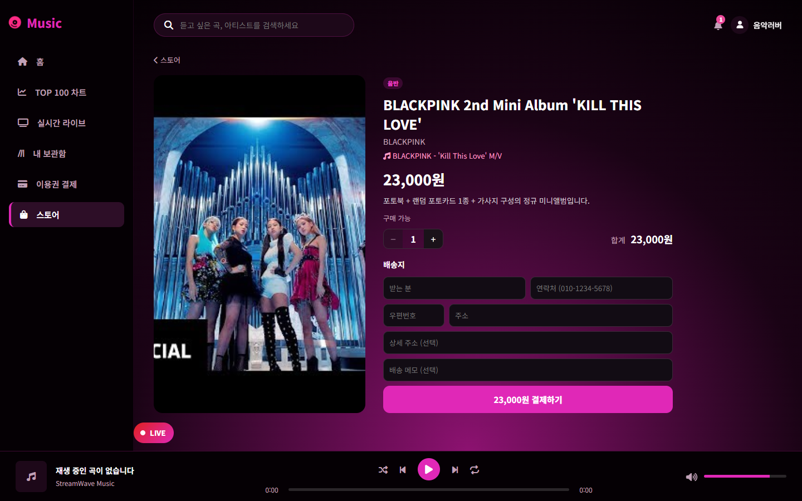
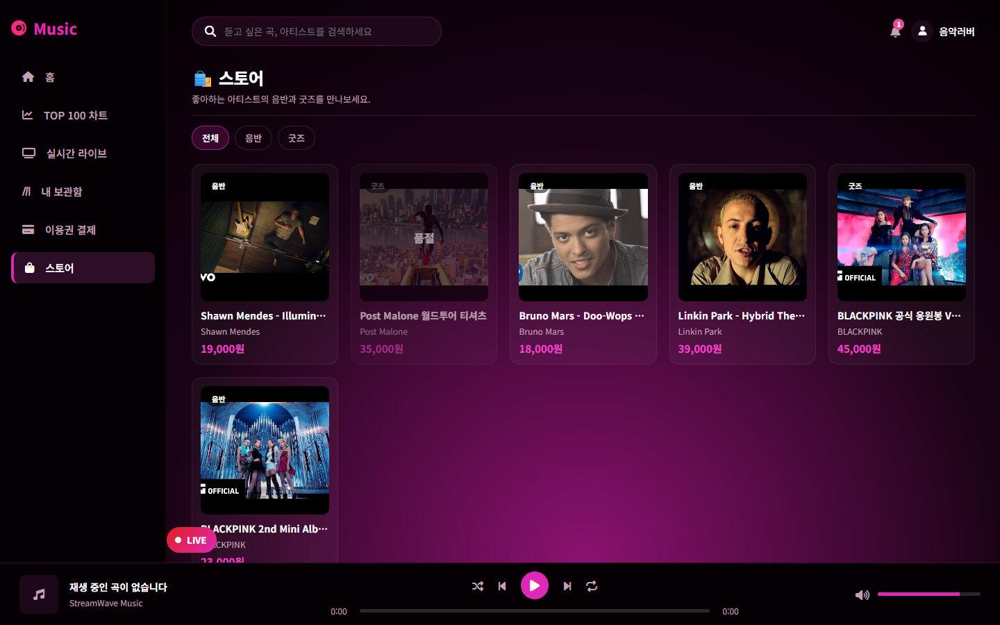
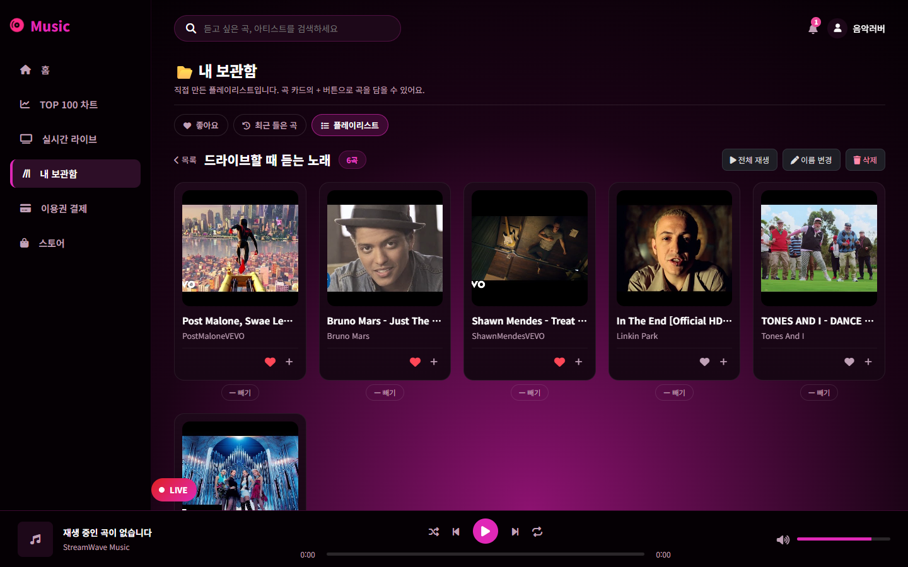
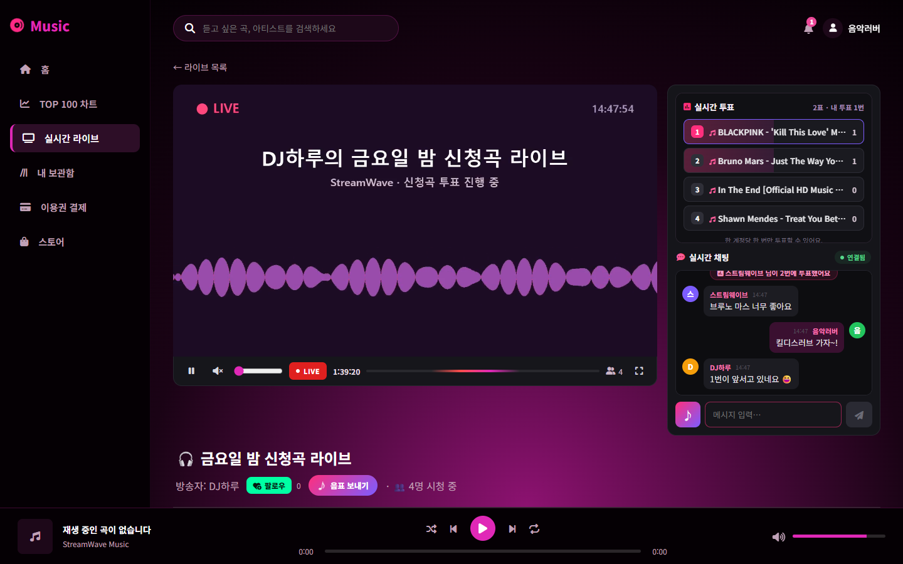

YouTube 음악 스트리밍과 라이브 방송을 한곳에서. 신청곡에 투표하고, 음표로 응원하고, 듣던 곡의 음반까지 바로 사는 음악 플랫폼
개발자
천경호
연락처
010-7757-5062
이메일
cjsrudgh98@gmail.com
구분
팀 프로젝트 · 풀스택 (기획 · 백엔드 · 프론트엔드 · 배포)
Backend
Java 25 · Spring Boot 4.1 · Spring Security · JPA · WebSocket(STOMP)
Frontend
React 18 · Vite 5 · hls.js · YouTube IFrame API
Infra
MySQL · Redis · SRS(RTMP/HLS) · Docker Compose · Caddy
GitHub
github.com/cjsrudgh98-crypto/-MUSIC-main2

OVERVIEW프로젝트 개요
음악은 혼자 듣기도 하지만, 누군가의 방송에서 함께 듣기도 합니다. 그런데 두 경험은 보통 서로 다른 서비스에 흩어져 있습니다.
StreamWave는 음악 스트리밍과 라이브 방송을 하나로 묶어 “듣고 → 함께 듣고 → 응원하고 소장하는” 흐름을 한 곳에서 끝냅니다.
이용권·후원·스토어 결제와 환불, 채팅 관리, 관리자 기능까지 실제 운영을 전제로 만들었습니다.
78REST API 엔드포인트 (+ STOMP 3)
13JPA 엔티티
30백엔드 자동 테스트
3종결제 흐름 (이용권 · 음표 · 스토어)
01 LISTEN
듣기
YouTube 카탈로그 · 24시간 TOP 100 · 검색 · 플레이리스트 · 이용권
→
02 TOGETHER
함께 듣기
OBS → SRS 라이브 방송, 실시간 채팅, 신청곡 투표 → 1위 곡 자동 예약
→
03 SUPPORT
응원 · 소장
♪ 음표로 방송자 후원, 듣는 곡의 음반·굿즈를 스토어에서 바로 구매
🎵음악 스트리밍
플레이리스트·채널·인기 차트 동기화, 비음악 영상 자동 정리
같은 곡 중복을 제목 + 재생시간(±5초)으로 묶어 대표 1곡
최근 24시간 청취 기준 TOP 100, 반복 재생은 시간당 1점
좋아요 · 최근 들은 곡 · 직접 만드는 플레이리스트
📡라이브 방송
OBS RTMP → SRS → HLS, 방송 화면 자동 썸네일
STOMP 채팅 · 신청곡 투표(1인 1표) · 채팅 관리(삭제·금지)
OBS 채팅 오버레이 · 채팅 독, 다른 페이지에서도 미니 플레이어
팔로우 채널 방송 시작 알림
♪음표 · 스토어
음표(1음표=1원) 후원 → 채팅·OBS 화면에 음표 알림
재생 중인 곡의 관련 음반·굿즈를 플레이어 바에서 바로
토스페이먼츠 결제, 재고 원자적 차감, 취소·환불
관리자 상품 등록·곡 연결·주문 배송 상태 관리
🔐회원 · 보안
이메일 가입 + Kakao·Naver·Google 소셜 로그인
인증된 이메일만 계정 연결 (사전 가입 탈취 방지)
인증번호 5분 만료·5회 제한, 로그인 Rate Limit
권한 3단계 (회원 · 부 관리자 · 최고 관리자)
StreamWave · 포트폴리오2
SCREENS주요 화면 · 듣기와 구매
실제 서버를 로컬에서 띄워 촬영했습니다. 곡 카탈로그는 실제 데이터, 상품·방송·채팅은 촬영용 예시 데이터입니다.

실시간 TOP 100최근 24시간 청취 기준. 청취가 부족한 자리는 YouTube 조회수로 채웁니다.

지금 듣는 곡의 관련 상품곡에 연결된 음반, 같은 아티스트의 굿즈를 플레이어 바에서 바로 보여줍니다.

상품 상세 · 주문수량·배송지를 입력하면 서버가 금액을 계산한 주문을 만들고 토스 결제로 이어집니다.

스토어음반·굿즈 분류, 품절 표시. 상품은 삭제 대신 판매 중지로 내려 지난 주문 내역을 지킵니다.

내 플레이리스트곡 카드의 + 버튼으로 담고, 전체 재생·이름 변경·빼기를 지원합니다.
스토어 주문 상태
결제 대기→결제 완료→배송 중→배송 완료·취소·환불
구매자는 배송 전까지, 관리자는 배송 중까지 취소할 수 있고 결제 취소와 재고 복구가 함께 처리됩니다. 결제창에서 그만둔 주문은 하루 뒤 정리됩니다.
StreamWave · 포트폴리오3
SCREENS주요 화면 · 라이브와 관리자
라이브 화면의 영상은 ffmpeg 로 만든 테스트 방송입니다 (OBS 송출과 같은 HLS 경로로 재생).

라이브 방송 · 신청곡 투표 · 채팅시청자는 버튼이나 채팅 “투표1”로 1인 1표, 방송자가 “1위 곡 다음 재생”을 누르면 방송자 플레이어에 예약됩니다.